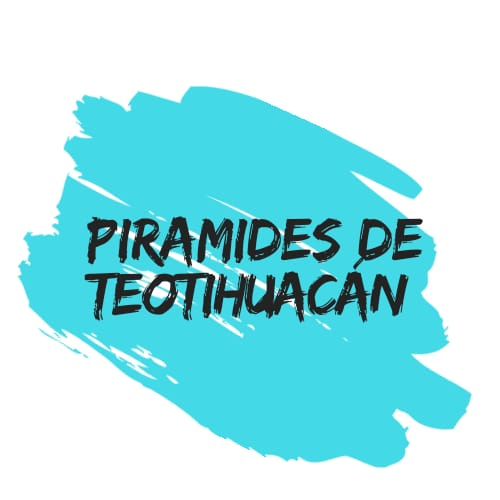
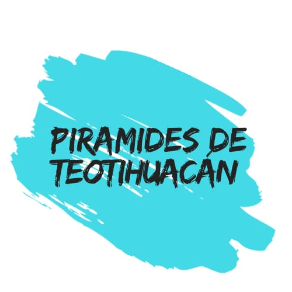

Playa del Carmen es el destino preferido de turistas nacionales y extranjeros. Si todavía no sabes qué hacer en Playa del Carmen , aquí te traemos una guía de los sitios que debes visitar en una de las playas más hermosas de la Riviera Maya. Los principales atractivos en playa del Carmen son los cenotes, pero no es lo único que puedes visitar, sigue leyendo y enamórate de su gran gastronomía y sus distintas actividades acuáticas que la hacen destacar. Hay muchísimos sitios a los que puedes ir, como los cenotes, Akymal y las zonas arqueológicas de Tulum, Cobá y Chichen Itzá. Todas las actividades son enfocadas a la vida del mar, pero también hay momentos para la cultura y la vida nocturna, a continuación, los mejores lugares que puedes visitar: 1. COZUMEL Los lugares que puedes visitar desde Playa del Carmen son la isla de Cozumel y para llegar ahí debes subirte a un ferry que da servicio todo el día uniendo ambos lugares, tarda aproximadamente 30 minutos en realizar el recorrido. Los boletos los adquieres directamente en las taquillas del embarcadero a precios accesibles. Para visitar Cozumel te recomendamos destinar un día entero, debido a que puedes practicar buceo o esnorkel en sus hermosos arrecifes de coral.